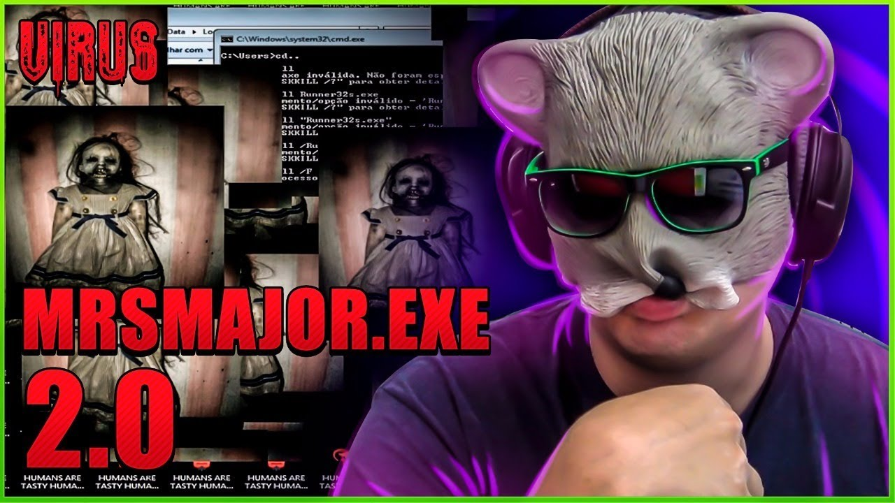

28 de Fevereiro de 2018
Primeiro contato com a progamação

Meu primeiro contato com a progamação foi no canal do Youtuber Rato
Borrachudo, na época eu tinha 13 anos e ganhei de presente meu
primeiro notebook, um bem fraquinho mas pra quem não tinha nada, era o
PC dos sonhos. Após conhecer o rato, me interessava demais os vídeos
sobre os vírus de computador, que eu ficava em choque de, como que
linhas de comando poderia simplesmente deixar seu computador lento e
sem funcionalidade, e era legal ver ele explicando (mesmo eu
entendendo nada). Depois desse dia, tudo mudou na minha vida.
4 de Julho de 2022
O curso de TI
Em 2020 com a pandemia, eu foquei bastante em concursos militares e
deixei de lado a área da programação por achar muito difícil de
aprender, pois como citei em cima, meu computador era bem mediano,
travava com coisas básicas e asism me desmotivando em aprender. Até
que um belo dia meu Pai me enviou um link da notícia que o IMD
(Instituto Metrópole Digital) estava oferendo várias vagas de curso
técnico de T.I, aquilo acendeu uma lâmpada dentro de mim, me inscrevi
e passei. Antes disso eu já tinha montado um computador bom, então
botei a mão na massa e estou aí, na metade do semestre do curso e cada
vez mais aprendendo.